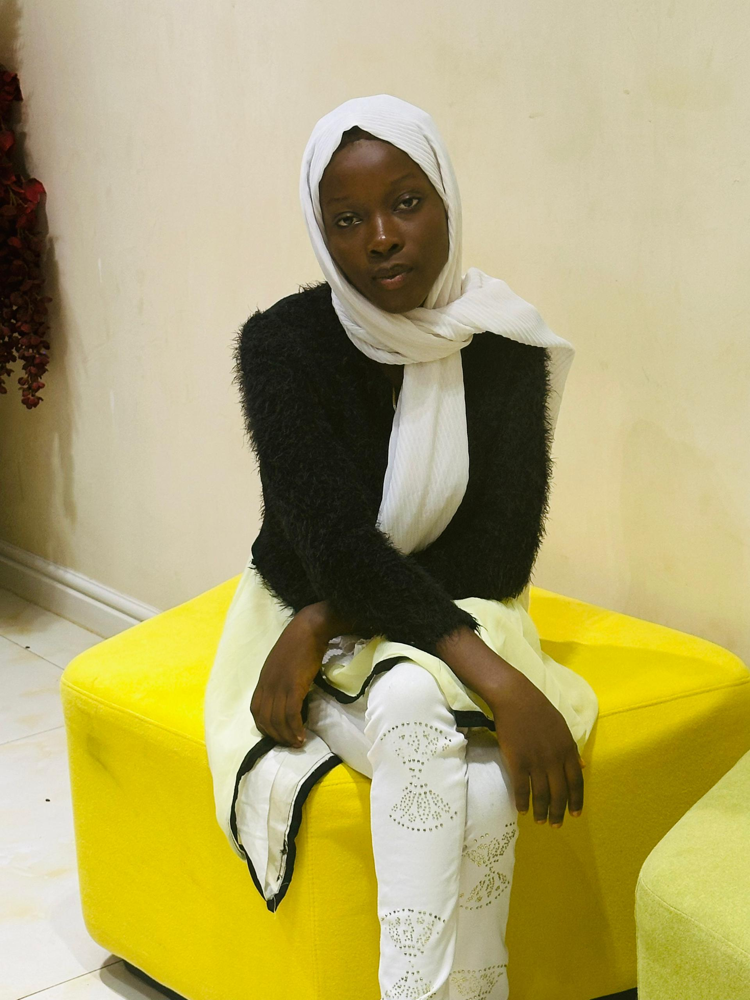

Home
services
Contact US

My name is Hannatu Ibrahim Abubakar.
I am a microbiologist and web designer, i have a passion for creating functional and visually appealing website at affordable prices.
In addition to designing websites, i aiso specialize in training others on how to design their own websites.
As a microbiologist, i have a strong foundation in science and analytical thinking. However, my true passion lies in web design,
where i can combine my creativity and technical skills to bring ideas to life
My web design services include creating custom websites, e-commerce platforms, and blogs.
I also offer training sessions for individual and group who want to learn how to design their own websites,
My training session are tailored to meet the needs of my clients, and i use a variety of teaching methods to ensure that everyone learn at their own pace.
My Goal
My goal is to make web design accessible to everyone, regardless of their background or skill level.
i believe that having a professional website is essential for businesses, organization and individuals who want to establish.